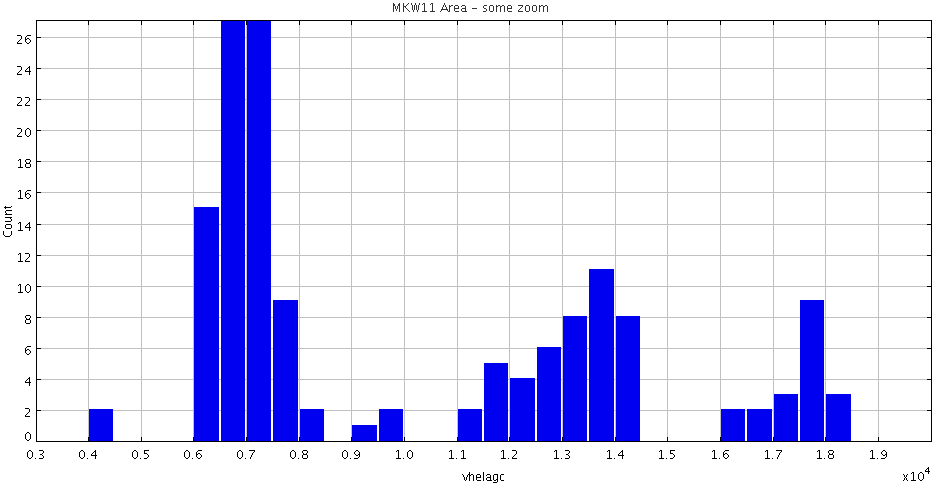
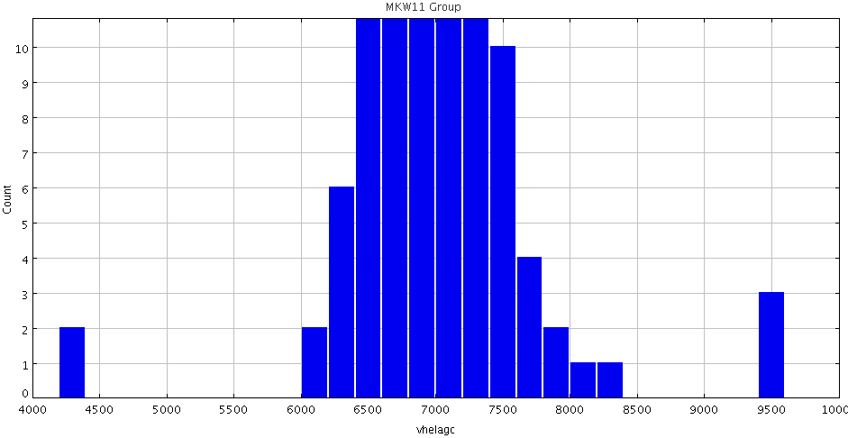
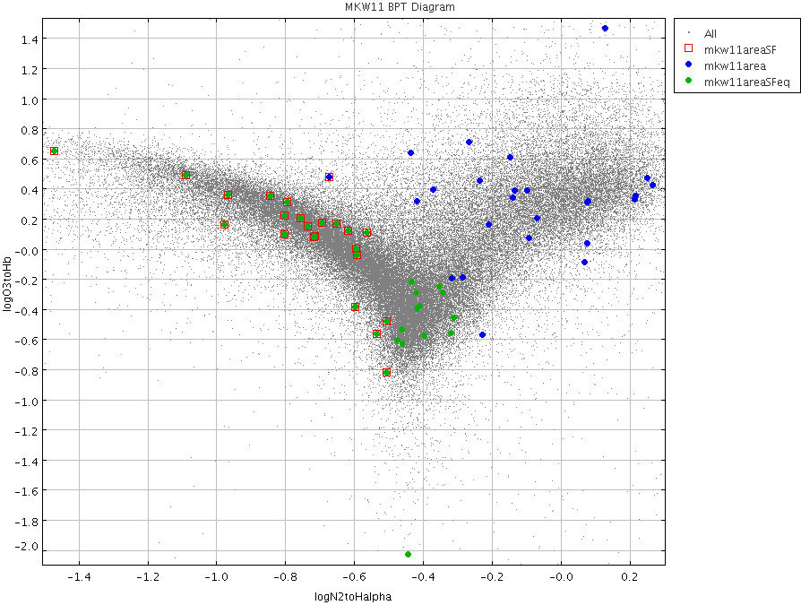

RA,Dec RA,Dec(deg) R(2Mpc) nz nopt cz sig logsig sig logLx dist*
MKW11 NRGb247 1329312+114719 202.3800 11.78861 1.2 12 46 7056 79 2.43 0.08 42.67 0.09 105 MKW11/MGBR **Skidmore
At this distance, 2 Mpc = 2.1 degrees.
So box should be:
RA > 201.30 & RA < 203.46
Dec > 10.69 & Dec < 12.89
First use the AGC to look at the velocity histogram
Make subset from agcnorthminus1.csv
radeg > 201.30 & radeg < 203.46 & decdeg > 10.69 & decdeg < 12.89
returns 175 galaxies
Some large scale structure:

But the cluster looks well defined. I'll choose a velocity range of 5000 to 9000 km/s.

Restricting the velocity range to:
radeg > 201.30 & radeg < 203.46 & decdeg > 10.69 & decdeg < 12.89 & vhelagc <9000 & vhelagc > 5000 leaves me with 97 objects in the AGC.
Now go to a57 and find all the ALFALFA galaxies: ra > 201.30 & ra < 203.46 & dec > 10.69 & dec < 12.89 & hv50 <9000 & hv50 > 5000 This gives 24 galaxies... saved as mkw11_a57.txt 1 4, 1 5, all the rest are 1s and 2s. Table name: /home/web/research/projects/egg/alfalfa/ugradteam/groups/files/a57_1245wOC.full.csv +--------+-----------+----------+------+-------+------+-------+-------+------+------+------+-------+ | agcnum | ra | dec | hv50 | hverr | iw50 | iwerr | sintp | serr | sn | rms | icode | +--------+-----------+----------+------+-------+------+-------+-------+------+------+------+-------+ | 232218 | 201.855 | 11.88361 | 7068 | 14 | 324 | 29 | 0.75 | 0.09 | 4.3 | 2.12 | 2 | | 232504 | 202.08417 | 12.76222 | 7414 | 1 | 172 | 3 | 1.23 | 0.08 | 8.5 | 2.22 | 1 | | 232507 | 202.14917 | 12.06556 | 7040 | 19 | 260 | 37 | 0.99 | 0.11 | 4.9 | 2.85 | 2 | | 230351 | 202.16708 | 12.71083 | 7480 | 3 | 159 | 7 | 1.47 | 0.08 | 10.4 | 2.31 | 1 | | 232392 | 202.2179 | 11.75583 | 7151 | 2 | 204 | 3 | 1.48 | 0.08 | 10.1 | 2.3 | 1 | | 230356 | 202.2675 | 12.23778 | 7258 | 5 | 405 | 10 | 1.93 | 0.11 | 9.0 | 2.24 | 1 | | 232509 | 202.29167 | 12.76889 | 7127 | 62 | 345 | 125 | 1.08 | 0.1 | 5.9 | 2.19 | 2 | | 8475 | 202.35751 | 11.00778 | 6835 | 1 | 591 | 2 | 18.73 | 0.16 | 52.8 | 2.68 | 1 | | 230366 | 202.37834 | 11.74556 | 7709 | 10 | 58 | 21 | 0.41 | 0.06 | 5.3 | 2.29 | 2 | | 230367 | 202.39792 | 11.69722 | 6549 | 7 | 117 | 14 | 0.88 | 0.1 | 6.9 | 2.64 | 2 | | 232407 | 202.46083 | 11.35 | 6740 | 28 | 256 | 55 | 1.0 | 0.09 | 6.3 | 2.24 | 2 | | 8486 | 202.48666 | 11.07194 | 6752 | 7 | 258 | 14 | 1.82 | 0.1 | 10.9 | 2.33 | 1 | | 233636 | 202.56332 | 12.84222 | 7710 | 6 | 267 | 13 | 1.33 | 0.1 | 6.9 | 2.53 | 1 | | 233873 | 202.55751 | 11.54389 | 6681 | 6 | 199 | 11 | 0.74 | 0.08 | 5.4 | 2.16 | 2 | | 233637 | 202.58875 | 12.48361 | 7197 | 2 | 51 | 3 | 0.51 | 0.05 | 6.2 | 2.09 | 1 | | 230380 | 202.66626 | 11.59472 | 7244 | 4 | 303 | 9 | 1.12 | 0.1 | 5.9 | 2.45 | 2 | | 233738 | 202.70792 | 11.82944 | 7034 | 18 | 136 | 36 | 0.52 | 0.07 | 4.8 | 2.23 | 4 | | 232292 | 202.76584 | 11.02667 | 7335 | 4 | 28 | 8 | 0.51 | 0.06 | 10.2 | 2.08 | 2 | | 230389 | 202.84125 | 10.72583 | 6304 | 3 | 269 | 5 | 2.62 | 0.1 | 15.1 | 2.36 | 1 | | 232410 | 202.87959 | 11.97139 | 8066 | 13 | 65 | 26 | 0.37 | 0.05 | 4.4 | 2.31 | 5 | | 232412 | 202.97708 | 11.80667 | 6965 | 5 | 48 | 10 | 0.48 | 0.05 | 7.5 | 2.06 | 2 | | 230407 | 203.12376 | 12.8175 | 7521 | 1 | 145 | 1 | 1.68 | 0.08 | 11.8 | 2.38 | 1 | | 232414 | 203.26875 | 11.07583 | 8205 | 30 | 177 | 59 | 0.72 | 0.08 | 5.1 | 2.36 | 2 | | 230417 | 203.32834 | 11.11694 | 7612 | 1 | 132 | 1 | 1.86 | 0.07 | 15.4 | 2.35 | 1 | +--------+-----------+----------+------+-------+------+-------+-------+------+------+------+-------+ Go back to nsa.v0.1.2.unpack.mags+lines_appmags.csv Add a column for vhelio = z*299792. Make a subset: RA > 201.30 & RA < 203.46 & DEC > 10.69 & DEC < 12.89 & vhelio <9000 & vhelio > 5000 Returns 91 objects. Now match it to the agc, and do cuts. Using agc+nsa.v012.mags+lines.appmags+faceHalpha.csv Use the same subset definition as above: RA > 201.30 & RA < 203.46 & DEC > 10.69 & DEC < 12.89 & vhelio <9000 & vhelio > 5000 I find 65 objects. Saving these objects as mkw11_agc+nsa+cuts.csv. Now, limit to the ones which are star forming: RA > 201.30 & RA < 203.46 & DEC > 10.69 & DEC < 12.89 & vhelio <9000 & vhelio > 5000 & logN2toHalpha < -0.5 This returns 24 objects. Here is a BPT diagram: If instead I define starforming as: RA > 201.30 & RA < 203.46 & DEC > 10.69 & DEC < 12.89 & vhelio <9000 & vhelio > 5000 & logO3toHbeta < 0.61/(logN2toHalpha - 0.05) + 1.3 and a correction to deal with when logN2toHalpha goes + (& logN2toHalpha<0) Gives this BPT diagram:

The 24 objects with logN2toHalpha < -0.5 are saved in mkw11_agc+nsa+cuts+SF.txt: Table name: /home/web/research/projects/egg/alfalfa/ugradteam/groups/files/agc+nsa.v012.mags+lines.appmags+faceHalpha.csv.gz +--------+-----------+----------+-------------+--------+------------+---------------------+--------------------+---------------------+------------------------+ | AGCnr | radeg | decdeg | Z | NSAID | ABSMAG_i | g-i | vhelio | logN2toHalpha | logO3toHb | +--------+-----------+----------+-------------+--------+------------+---------------------+--------------------+---------------------+------------------------+ | 232392 | 202.2179 | 11.75583 | 0.023866156 | 171004 | -20.431505 | 0.5318640000000023 | 7154.882639552 | -0.7169660119170814 | 0.07343605330902415 |*A57 | 233873 | 202.55751 | 11.54389 | 0.022225924 | 70618 | -17.535881 | 0.516058000000001 | 6663.154207808 | -0.5969723841893063 | -0.0029001190421427676 |*A57 | 232292 | 202.76584 | 11.02667 | 0.02432882 | 70606 | -17.939274 | 0.5465940000000025 | 7293.58560544 | -0.7370629809632853 | 0.14757327901796305 |*A57 | 232412 | 202.97708 | 11.80667 | 0.023298405 | 70724 | -17.674055 | 0.580679 | 6984.675431760001 | -0.7573852344791202 | 0.1993842016286227 |*A57 | 232414 | 203.26875 | 11.07583 | 0.02736119 | 70597 | -17.554907 | 0.6488550000000011 | 8202.66587248 | -0.7963556808483895 | 0.3083263710444226 |*A57 | 232381 | 201.92166 | 11.34083 | 0.022583876 | 70540 | -17.180378 | 0.833202 | 6770.465353791999 | -0.8459938556401158 | 0.3459012080230274 | ** In Becky's List | 232287 | 202.03833 | 10.97139 | 0.023922391 | 70658 | -17.875736 | 0.6925449999999991 | 7171.741442672001 | -0.5927598288195535 | -0.04416440028469017 | ** In Becky's List | 232290 | 202.26001 | 10.91556 | 0.023709245 | 70653 | -16.978384 | 0.5110109999999999 | 7107.8419770400005 | -0.8030692800689719 | 0.21847526322572658 | ** In Becky's List | 232224 | 202.40167 | 11.81389 | 0.026233481 | 70703 | -19.613344 | 0.8698730000000019 | 7864.587735952 | -0.536433336411816 | -0.5698535365516493 |** In Becky's List | 232279 | 202.75041 | 11.52694 | 0.022568688 | 70612 | -17.840687 | 0.348552999999999 | 6765.912112896 | -0.6933189445405867 | 0.16922795199099455 |** In Becky's List | 232374 | 201.59167 | 11.9725 | 0.022563497 | 70669 | -17.265003 | 0.6396119999999996 | 6764.355892623999 | -0.5640349769877522 | 0.10534546310576062 | | 232502 | 201.96083 | 12.45333 | 0.021761954 | 70677 | -17.11427 | 0.6910769999999999 | 6524.059713568 | -0.8028412566093055 | 0.09394828646374326 | | 232512 | 202.32834 | 12.66028 | 0.024922853 | 70684 | -16.722208 | 0.4196479999999987 | 7471.671946576 | -1.0906771263106356 | 0.4838560317853551 | | 230365 | 202.35709 | 11.91 | 0.021861613 | 163584 | -19.870243 | 0.9414459999999991 | 6553.9366844959995 | -0.5082807357691538 | -0.4856289654810508 | | 232291 | 202.53999 | 10.95667 | 0.024108209 | 70614 | -17.137213 | 0.7239429999999984 | 7227.448192528 | -0.5987132173577395 | -0.386974761279718 | high inc | 232524 | 202.70209 | 12.27444 | 0.025568696 | 70710 | -16.821346 | 0.18308799999999792 | 7665.2905112319995 | -1.4720967431267893 | 0.6465983157147841 | | 232409 | 202.7925 | 11.83306 | 0.025030907 | 70713 | -17.915457 | 0.5845239999999983 | 7504.065671344 | -0.6540767962795921 | 0.16452399469541 | | 232532 | 203.02585 | 12.75972 | 0.026650121 | 70709 | -17.770319 | 0.23358200000000195 | 7989.493074831999 | -0.9661713821860914 | 0.35204743738286914 | | 233874 | 203.25626 | 12.05194 | 0.025109787 | 70745 | -16.82167 | 0.5540459999999996 | 7527.713264304 | -0.7161462219845109 | 0.0804625457235347 | ** These appear to have incorrect emission line values - spectrum online shows absorption** | 232383 | 202.01999 | 11.69361 | 0.022950908 | 70651 | -18.984158 | 0.9931680000000007 | 6880.498611135999 | -1.403488738252267 | | | 230381 | 202.69749 | 11.20167 | 0.021749107 | 163615 | -21.514761 | 1.1088050000000003 | 6520.208285744 | -0.9781340281650821 | 0.16065666787028265 | | 230353 | 202.17831 | 11.625 | 0.024734378 | 70650 | -18.67738 | 0.9908599999999979 | 7415.168649376001 | -0.5062592020233029 | -0.8232567148410596 | | 232386 | 202.16666 | 11.99333 | 0.023287086 | 70595 | -19.469284 | 1.0115359999999995 | 6981.282086112 | -0.6724789842044108 | 0.47067961632482086 | 232403 | 202.35542 | 12.04445 | 0.022876352 | 70693 | -19.435003 | 1.1209749999999978 | 6858.147318784 | -0.6178838874333428 | 0.1147494117585979 | +--------+-----------+----------+-------------+--------+------------+---------------------+--------------------+---------------------+------------------------+ I ran a topcat match, and found 5 alfalfa matches in these, leaving 19 star forming galaxies not in ALFALFA. Becky adds: 5 of these show absorption in SDSS spectra - cut from sample to get 14. Becky's list has 18 objects, 5 of which are in NSA list, as marked. There are 8 additional in in Martha's face-on NSA (agc+nsa.v012.mags+lines.appmags+faceHalpha.csv): # AGCnr radeg decdeg NSAID ABSMAG_i g-i vhelio logN2toHalpha logO3toHb 230339 201.72542 11.5625 70657 -20.843775 1.0737330000000007 6874.71622304 -0.31263636265652106 -0.46179556363545915 232219 201.85791 11.84694 70676 -19.676945 0.9901890000000009 6747.64488696 -0.2294894592803309 -0.5762953730341824 232221 202.095 11.4475 70648 -19.499971 1.0376539999999999 7048.51913608 -0.3984080760689198 -0.5818186964017117 232389 202.2079 11.33667 70637 -18.10447 0.8664020000000008 6649.042098991999 -0.4339499760327445 -0.22122778071688193 8478 202.3725 11.62472 70634 -21.159966 1.1459340000000005 6245.468704016 0.21247090238988192 0.3267316933057859 232406 202.41499 11.27 70632 -17.140577 0.8508969999999998 6439.717431456 -0.4441253833067018 -2.0301053932257296 ** high inc (NSA ba90=0.45 overest) 232223 202.23332 10.87833 70656 -20.28475 1.10786 6959 -0.4179 -0.40186 232398 202.31168 11.6 70635 -18.411682 1.1679969999999997 6706.619850720001 -0.35280411624335106 -0.25291079035837954 ** high inc (NSA ba90=0.45 overest) And 2 others matched within 10" radius in nsa.v0.1.2.unpack.mags+lines_appmags.csv: # AGCnr radeg decdeg NSAID BA90 ABSMAG_i g-i vopt vhelio logN2toHalpha logO3toHb 232222 202.2025 11.0325 163566 0.63578 -19.075638 0.6605210000000028 6152. 6131.159513376 0.0 "" ** problem near Ha in SDSS 233870 202.36833 11.65528 70619 0.46523 -17.807522 0.6083299999999987 7476. 7469.201660496 "" "" 3 others in Becky's sample have high inclination, so we cut from sample: 232399 202.31999 11.53056 70636 0.39437 -17.915285 0.6594470000000001 7273. 7268.839874384 -0.679968698796305 0.002351769305631518 232399 has high inclination (ba90~0.29 via AGC), so cut from sample. 232289 232407 From above, two code 5 HI: agcnum | ra | dec | hv50 | hverr | iw50 | iwerr | sintp | serr | sn | rms | icode | | 233738 | 202.70792 | 11.82944 | 7034 | 18 | 136 | 36 | 0.52 | 0.07 | 4.8 | 2.23 | 4 | | 232410 | 202.87959 | 11.97139 | 8066 | 13 | 65 | 26 | 0.37 | 0.05 | 4.4 | 2.31 | 5 | ** this has emission in SDSS but is not in NSA In addition, Becky finds 2 objects with HI, no Halpha: --AGC 232218: This object is near AGC232219, which does have Halpha, but no HI, and is on target list --AGC 230366: Near AGC 232010, 238670, 230363, none of which have Halpha That makes 15 with Ha, no HI, plus 9 others w/SF from NSA, 2 marginal HI detections, and 2 with HI but no Ha or SDSS for a total of 28. Also note 232392, which has a companion 238996 with vopt=0. This companion has Halpha, so is at cluster redshift. No HI detection?